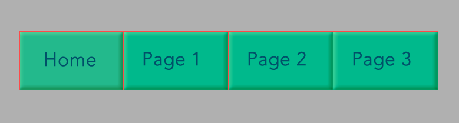
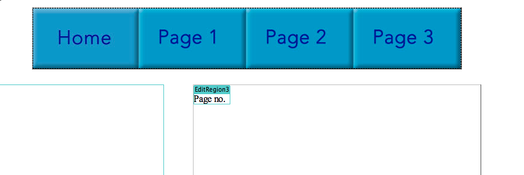
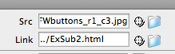
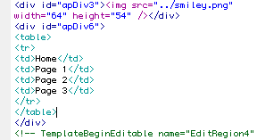
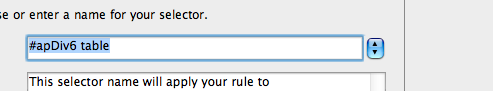
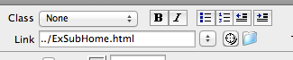
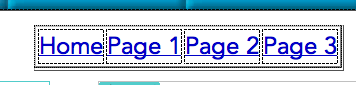
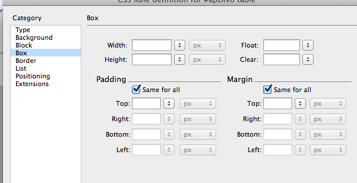

In order to make the site more interesting, I went on to explore some ways to make navigation bars on Fireworks.
First, make boxes with labels in it and then make it a symbol.
Afterwards, we can even customize your buttons by playing with the hover or down settings.
Insert an image object (Fireworks htm) to wherever you want your buttons to be, then there might be a bug. The hovering and down settings might not work as the script was not copied to the DW Template code. So to solve this problem, just copy and paste the script onto the buttons head.
After fixing the bug, we need to make the buttons work, so we have to link it to our subpages.
Click here to see the final example website with working buttons and subpages.
Instead of having graphic navigation, I also explored text navigation.
This one, we can just enter the text in DW and make modifications using CSS. Like the image below.
To edit the CSS, make a new CSS Rule.
Then, link it to the subpage.
  Click here to see the final example website with working Text-Nav and subpages.
Now that I have gone through both graphic and text navigation, let me evaluate and see which one is better.